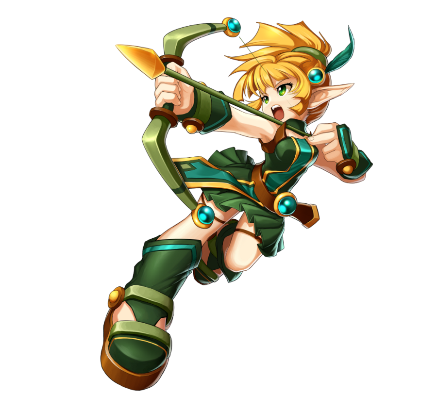
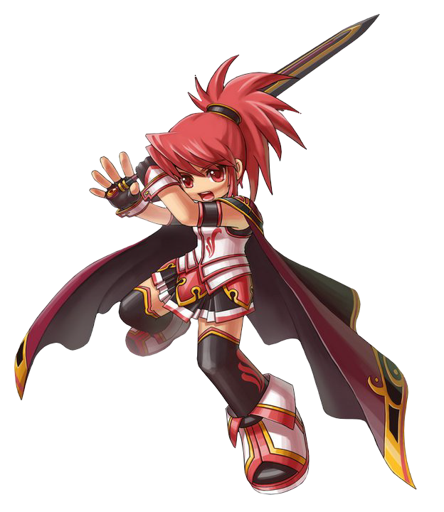
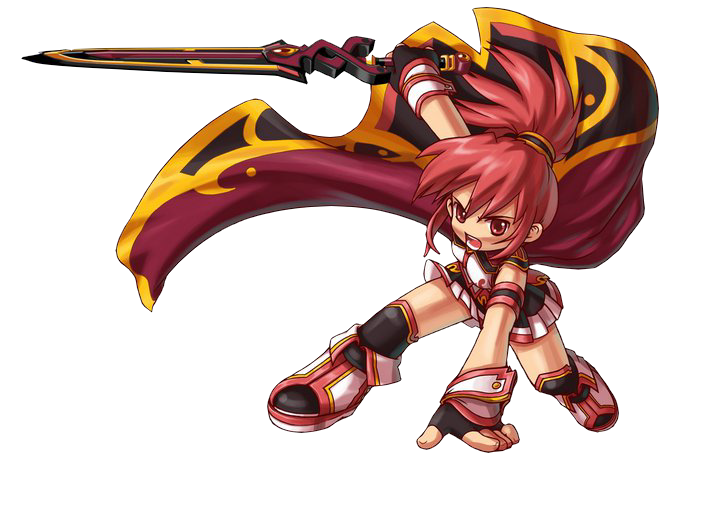
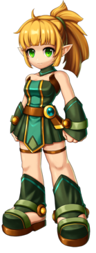
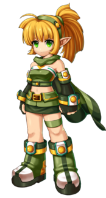
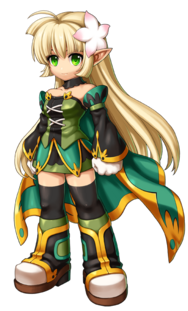
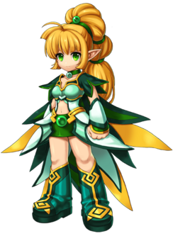
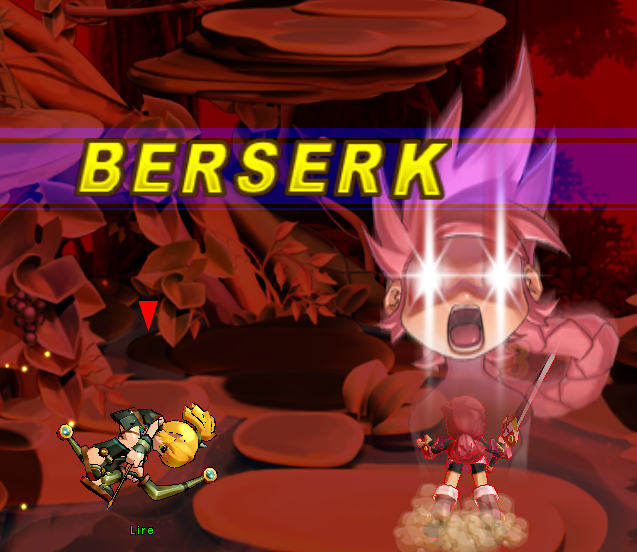
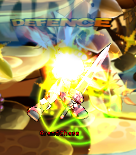

Informações Principais do Personagem
Nome: Lire Eruel
Idade: 17 anos
Origem: Ilha de Eryuell
Hobbies: Jardinagem
Gostos: Qualquer coisa relacionada a espíritos
Não Gosta: Monstros (especialmente os feios)
Fraquezas: Insetos, trabalhos domésticos (excessivamente perfeccionista)


Impetuosa e de gênio difícil, Elesis é a líder dos heróis da Grand Chase. Uma guerreira nata
que prefere agir a perder tempo conversando, e usa de força bruta para resolver seus problemas.
Treinada desde pequena na arte da guerra e descendente de um dos maiores heróis de Vermécia, seu
notável talento garantiu que ela herdasse de seu pai, Elscud Sieghart, o posto de líder dos
Cavaleiros Vermelhos de Canaban após sua ausência. Entretanto, Elesis acabou abandonando seu
cargo para poder se unir à Grand Chase e ir atrás de seu pai, deixando seu posto nas mãos de
Gerard Fahrenwhite.
Personalidade
Sendo a primeira mulher sucessora da família Sieghart, ela tenta ser forte por si mesma e tende
a agir "como um homem". Ela se enraivece e parece cansada de Sieghart agindo como um idiota e
detesta quando ele a chama de ruivinha. A hábil espadachim usa sua fachada de durona para
esconder seus sentimentos e manter seu passado em segredo, buscando não chamar a atenção
enquanto busca pelo pai desaparecido.
De qualquer forma, ela não guarda rancor, então se ela tem preocupações ou ela não consegue
pensar direito, ela descansa sua mente com treinamento de espada.

Classes

Arqueira
Arma: Espada

Caçadora
Arma: Lança

Guardiã
Arma: Montante

Nova
Arma: Sabres
Habilidade especial
Berserk
Quando a Elesis é acertada por uma flecha ou kunai, um pequeno medidor será mostrado na
direita dela. O indicador esvazia rapidamente em um curto período de tempo. Quando o indicador
estiver cheio até o topo depois de ser atingida por um número de flechas ou kunais suficientes,
a palavra BERSERK será mostrada no meio da tela, e aqueles em volta dela serão mandados pelos
ares, sofrendo uma pequena quantidade de dano no processo.
Somente Elesis, Sieghart depois de equipar a Árvore de Talentos do Gladiador#Fúria e Dio depois
de equipar a Arsenal Demoníaco III possuem essa habilidade.


Defesa Contra Flechas
Defesa Contra Flechas, obviamente pelo nome, defende contra flechas. Pressione o Botão da
Corrida (Arrow L.PNGArrow L.PNG ou Arrow R.PNGArrow R.PNG) enquanto a flecha estiver perto.
Também é possível refletir as flechas de volta para o usuário, mas com uma baixa chance. Quando
bloqueadas com sucesso, será mostrado como "Defense", e negará o dano das flechas em 80%.
Defesa Contra Flechas só bloqueia as flechas comuns. Se alguma flecha encantada se aproximar,
será impossível defende-la/bloqueá-la, e esta deverá ser evitada.
Todos os personagens com exceção de Lire e Arme possuem Defesa Contra Flechas. Porém, Lire pode
ganhar a habilidade de eliminar flechas inimigas e Arme pode adquirir a habilidade de refletir
flechas.
Defesa Contra Magia
Basicamente é a mesma coisa que a Defesa Contra Flechas, mas invés disso o faz em componentes
Mágicos. Muitos tipos de habilidades, como refletores, balanços defensivos, ou escudos
defensivos, são conhecidos por bloquear diversos ataques, sobretudo magias como a Bola de Fogo.
A habilidade de adquirir Defesa Contra Magia é normalmente adquirida através do uso da Árvore de
Talentos. Somente Elesis, Lire, Arme, Ryan, Ronan, e Sieghart podem adquirir Defesa Contra
Magia.
Estranhamente, a Elesis é o único personagem que pode fazer verdadeiramente bloquear o Círculo
Mágico da Maga, da mesma maneira que a Defesa Contra Flechas.